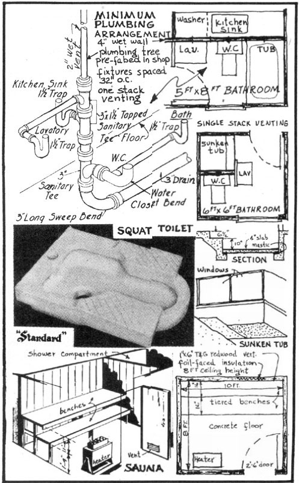
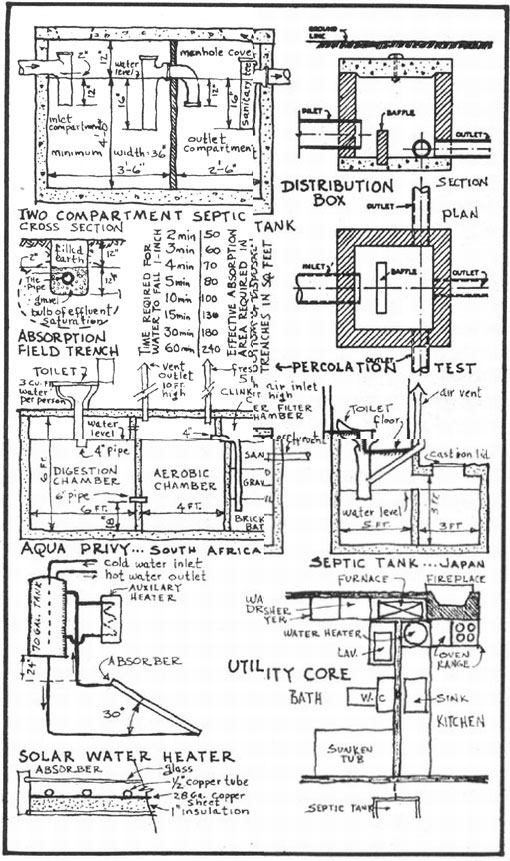

KENKERN
THE OWNER-BUILT HOME, VOLUME 4, CHAPTER 1
PLUMBING
Unfortunately, far too many owner-builders resist the idea of installing their own plumbing and wiring. These amateurs somehow blunder through design and structural problems, but retreat for comfort in favor of "experts" when the time comes to plumb and wire their houses. And the duly licensed experts are apt to hoodwink their clients into believing that their "profession," above all others, requires special aptitudes and nearmagical powers of understanding.
True, the variety of pipes and fittings, and the usual complexity of vents and drains-when installed under building code jurisdiction-is enough to exhaust the hardiest. But plumbing-fixture arrangements can be simplified. New fitting and piping materials and improved drain layouts can be used. A rational understanding of plumbing practice exposes to honest daylight much of the costly hocus-pocus found in the Secret Order of Plumbing Officials.
These officials snugly protect their profession from renegade intruders by using the Plumbing Code. The only really just and decent part of the U.S. Uniform Plumbing Code is section 1.10(c), which states that:
Any permit required by this code may be issued to any person to do any plumbing or drainage work regulated by this code in a single family dwelling used exclusively for living purposes . . . in the event that any such person is the bona fide owner of any such dwelling, and that the same are occupied by or designed to be occupied by said owner, provided that said owner shall personally purchase all materials and shall personally perform all labor in connection therewith.
Plumbing codes now in force date back to the 1870's when the water carriage system was first introduced. The erroneous nineteenth century belief that "sewer air" caused disease is now perpetuated by law. Sewer air code requirements demand individual venting of each fixture-trap. As background information to the function of vents it should first be known that the fixture-trap provides a water seal between the drainage system and the building's interior. When a fixture is discharged a pressure fluctuation occurs which tends to reduce the water seal in the fixture-trap. Therefore vent pipes are connected at various points in the drainage system so gases may escape to the outside. Those plumbing officials who continue to hold the discredited "sewer gas" theory would do well to read Winslow's, The Sanitary Significance of Bacteria in Air of Drains and Sewers. According to Winslow (as quoted by the American Public Health Service), a person who placed his mouth at the top of a plumbing stack and breathed the air from it for 24 hours would inhale no more colon bacilli than were then to be found in a quart of New York City drinking water.
If a break in a fixture-trap seal occurs, its only effect is a musty odor, immediately corrected by refilling the trap. A separate vent pipe for each fixture is certainly not justified on health grounds. Self-siphonage-the discharge from a fixture sucking away its own trap seal-is more likely with bowl-shaped than with flat-base fixtures, as the final slow trickle of the latter insures a refilling of the trap.
Functionally, one 2 inch stack can serve total venting requirements for a complete house-plumbing system. Also, this stack can be used to carry discharge from fixtures connected into the drainage system at a higher level (wet venting). However, according to code requirements, the one-stack plumbing layout is permissible when the fixture-drain slopes continuously at 1/4 inch per foot, and when the length of drain between trap and vent does not exceed: 5 feet for 1-1/4 inch drain, 6 feet for 1-1/2 inch drain, 8 feet for 2 inch drain and 12 feet for a 3 inch drain. Proper fixture arrangements therefore yield substantial material and labor savings.
The number one rule in plumbing fixture arrangement is: keep fixtures compact. Where possible, locate the toilet between the tub and the sink. For ease of installation as well as material savings, bathroom fixtures should line up on one wall. The opposite side of this so-called "wet wall" could include perhaps food preparation and laundry functions. A complete mechanical core might well be planned to include water heating, furnace, fireplace, and main electrical panel, as well as bathroom, laundry, and kitchen. Some progressive plumbing designers have arranged plumbing fixtures so that all supply and drainage pipes are above the floor. This is possible now that the much improved wall-hung toilet is available. With this arrangement plumbing can be one of the final operations in building a house. Even the fixtures are hung before the pipe is installed. If desired, access to the complete bathroom plumbing system can be made from behind kitchen counters located on the opposite side of the wall. Above the floor plumbing also makes possible the use of less expensive plastic and galvanized iron drain and waste fittings.
The recent introduction of plastic DWV (drain, waste and vent) pipe and fittings marks one of the few major advances in the plumbing industry since 1920, when the outhouse was moved indoors. The material is made from a black acrylontrile compound, proven to have excellent dimensional stability and resistance to acids and alkalies. Plastic DWV eliminates the usual need for leading, caulking, threading, or soldering joints. It is cut with a carpenter's saw and fitted with solvent cement. In comparing the installed cost of cast iron, copper, and plastic plumbing, one finds an average saving of $100 by using plastic DWV. The material cost of cast iron in one typical residential system is $116, with 22 man hours of labor, or a total of $206. The cost of copper pipe and fittings is $115, with 12 man hours of labor, or a total of $164. The material cost of plastic DWV is $98, with 4 man hours of labor, or a total of $115. Yardley Plastics Co., Columbus, Ohio, and Marbon Chemical Co., Washington, W. Va., are two companies that seem to carry a wide selection of fittings. Although FHA approves plastic DWV, few plumbing officials' associations authorize it under present codes.
A complete re-study of bathroom fixtures should be considered in view of recent technological and hygienic discoveries. The wall-hung toilet is one such improvement. It has many advantages in space saving, improved cleaning and quiet flushing. Hygienically, however, one should seriously consider the seatless, squat-type toilet. American Standard, a leading manufacturer of bathroom fixtures, sells the squat-type toilet through their manufacturing outlet in France. In his book, The Study and Practice of Yoga, Harvey Day makes much of the squat position as being proper for evacuation. This position stretches the small of the back, and helps to hold the head up.
The squat is the natural position of evacuation, and when Man discarded it he invited trouble in the form of constipation. Scores of authorities, among them Bernarr McFadden, Dr. Leonard Williams, Dr. Kathleen Vaughan, F.A. Hornibrook, Sir Arbuthnot Lane and Dr. R. Reginald Auston, have stressed this point. Hornibrook's book on the abdomen is worth reading if only for this. A friend of mine goes even further. While at Cambridge he wrote a thesis showing that the modern lavatory seat is the cause of most stomach and nervous disorders.
Bathing is a "ritual of serenity" to most Japanese, but to us it is too often something to be done as quickly as possible. In regard to bathing facilities, the commonly available square tub provides a seat on the side for bathing, a pleasant improvement over conventional tubs. A built-in sunken tub-shower combination offers even more advantages in bathing comfort and esthetics. The Japanese usually provide a "faro"-a three-foot deep tub for hot water-next to their shower. The shower is first used to clean the body scrupulously. Then one almost completely immerses the body in the furo at a 104° temperature.
An equally ancient method of heat bathing is the Finnish "sauna". The sauna consists of an airtight room at least 8 feet by 6 feet, heated to a temperature of 175-200° with a humidity of 8%. This dry heat tends to open and clean the pores of perspiration while circulation is stimulated. Stones are heated on top of the sauna stove. A cupful of water is then poured over the stones to provide a quick burst of added heat. The walls and ceiling of a sauna should be lined with unfinished redwood, to best absorb the moisture evaporated from the bather's body and thereby keep the air moisture free. Health seekers should definitely install a sauna adjacent to their bathroom shower. Ten minutes in a sauna followed by a cool shower invigorates as no other therapy can.
When a direct connection to an established sewer system is not possible, the owner-builder must provide some method of disposing of his household wastes. A water carriage disposal system-one in which sewage and liquid wastes are conveyed by the flow of water-is the best and most commonly employed method. The septic tank and absorption field form the two main parts of a water carriage disposal method. There are countless varieties of septic systems and, before the Public Health Service Environmental Health Center at Cincinnati, Ohio issued the results of its thorough investigation of the subject, one was very much at a loss in choosing a correct household disposal layout.
A septic tank functions in three ways: as a sewage settling tank, a sludge storage tank, and a digestion tank. Digestion of sewage in a welldesigned tank is almost total. Anaerobic bacteria action, resulting in oxidation of sewage, first takes place. The septic tank should be sufficiently large to permit storage of solids, as digestive action by this bacteria is relatively slow. At the inlet end of the septic tank a baffle or pipe fitting should be installed to divert the incoming sewage downward, thus leaving the upper scum layer undisturbed. The outlet end has a similar baffle to retain solids but permit liquid effluent to discharge to the absorption field. Initial research at Cincinnati shows that the twocompartment tank gives more efficiency than a one- or three-compartment tank. Most of the upper-level scum and bottom-level sludge can be retained in the first, anaerobic compartment, so that a cleaner effluent is finally discharged from the second, aerobic chamber. The inlet compartment should have a capacity of two-thirds the total tank capacity, and not less than 500 gallons for minimum installations.
The correct design of a household sewage system most certainly includes a distribution box between the septic tank and the disposal field. A distribution box regulates and equalizes flow in all lines. It also serves as a sludge inspection and clean-out manhole.
The soil absorption field, rather than the septic tank, is considered most important to the success or failure of the entire disposal system. Where the average rainfall amounts to 30-50 inches in a year, the average effluent has been calculated to be as much as 2000 inches in a year. Effluent from the septic tank contains impurities and disease germs which are converted to harmless matter by air breathing soil bacteria. When effluent is discharged over 3 feet below the ground surface, there is a danger that ground water pollution will take place before purification by soil bacteria. ABS (alkyl benzyl sulphonates) pollution results from use of detergents containing this chemical.
Soil absorption capacity should be determined fast when selecting a disposal field. It is advisable to make a simple percolation test: Excavate a hole to the depth of the proposed disposal trenches (about 2 feet). Fill the hole with water to a depth of 6 inches, and allow the water to seep away. From the average time required for the water to drop 1 inch, one can determine the amount of absorption area required (use chart given here). In the United States a daily flow of 100 gallons of sewage for each bedroom is generally estimated.
Septic systems in other parts of the world have been designed to use a small fraction of the amount of water ours do. Where American toilets use 5 gallons of water to a flushing, some Japanese and South African toilets can be adequately flushed on 1 quart of water. This is accomplished by installing the septic tank immediately below the toilet. This system consequently saves on expensive plumbing. It also drastically reduces the size of tank and absorption field needed, and thereby minimizes dangers of water pollution. A few years ago the National Association of Home Builders built a research house in Knoxville that had a garbage type grinder installed under the toilet. Only 1 gallon of water was required to flush and the plastic sewer drain was only 2 inches in diameter.
Hundreds of houses located in Florida and the Southwest use the sun for heating water. In northern states solar water heaters are used in summer months, combined with auxiliary winter time heaters. Once installed, a solar water heater operates every day practically without maintenance or cost. A solar water heating system consists of an insulated storage tank, connected to a solar absorber. As sunshine is absorbed on the black painted surface of the heater panel, water is heated and flows by natural circulation into the tank for storage. Water temperature can be raised about 20 degrees by a single passage through the absorber, so continual circulation is necessary before the desired temperature of 135° is reached. As hot water is less dense than cold water, the storage tank must be at a higher elevation than the absorber. Thus cold water flows from the bottom of the storage tank, up through the absorber, and back into the top of the storage tank. If the height of the tank above the absorber sorber outlet is too small, reverse circulation may take place at night, with heat being radiated to the night sky.
A solar water heating installation can best be designed as an integral part of a central utility core. Bathroom and laundry functions are located on one side of the "wet" plumbing wall. Cooking and heating facilities are located on the opposite side. The hot water storage tank is located above the roof, next to the fireplace chimney. Auxiliary water heating coils are located in fireplace and furnace. All the mechanical controls are thus centralized in one core.
BIBLIOGRAPHY (books listed in order of importance)
Individual Sewage Disposal Systems: Report 2461, 1954, U.S. Dept. of Health, Education & Welfare.
Solar Water Heaters for Domestic Use: Report ED5, Commonwealth of Australia, Melbourne, Australia, 1957.
Plumbing Fixture Arrangement: Construction Aid No. 1, Housing and Home Finance Agency.
S eptic Tanks: Paper 18, Housing and Home Finance Agency.
|
 Sir Arbuthnot Lane and Dr. R. Reginald Austin, have stressed |
 |
|